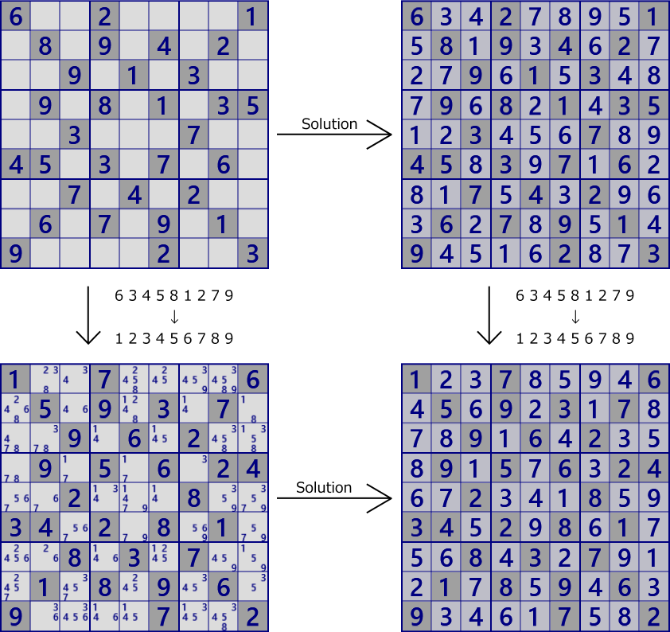
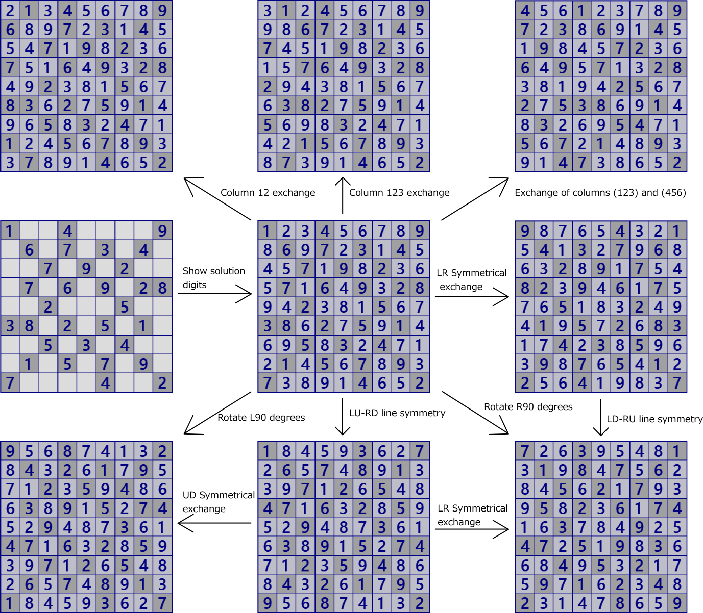
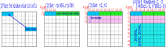

*** 改訂 暫定版 ***
数独問題の変換・標準化
数独の問題は、一定の条件のもとで見た目を変えることができます。
数字を交換、あるいは任意の順番に並べた数字列（634581279）→（123456789）に変換しても、数独の問題として成立します。

また、1列と2列の交換、列の循環交換(1→2→3→1)、(123列)と(456列)の交換、同様に行の交換、
行と列の交換(転置)、あるいはこれらの組み合わせた交換を行っても、数独の問題として成立します。
ただし、1列と4列の交換のように数独の制約を超える変換はできません。
回転は、行と列の交換と上下・左右の交換の組合せで表現できるので、ここでは考えないことにします。

また、このような変換を行っても、数独の問題の解き方は同じです。難易度やそれぞれの段階で適用できる解析アルゴリズムも全く同じです。
数独の解き方は、1つの局面に複数のアルゴリズムを適用できることがあります。 どのアルゴリズムを適用するかは、解くヒトの好み、プログラムの実装によるので、解き方に多少（多々）の違いは生じます。 そのようなことは気にしないことにします。
数独の問題は、表出数字位置のパターンと、解となるブロック制約付きのラテン方陣の組合せです。
パターンとラテン方陣のそれぞれの標準形の組合せで、数独の問題の標準形を定義することができます。 もちろん、パターンとラテン方陣を組み合わせるだけでは、問題が解けない、複数の解があるなど、数独の問題になりません。 GNPXの問題作成機能は、ラテン方陣を生成し、表出数字位置パターンと合わせて問題を作り、 それが解析アルゴリズムで解けるかどうかをテストしています。
（GNPX Ver.7からは、DLXを用いる作成方法を追加しました。）
以下では数独問題の変換をきちんと定義し、数独問題の標準化の方法を定めます。
数独問題の変換（非対称変換）
数独の問題は、行・列の交換と、行列の転置、およびそれらを組合せた変換を行っても成立します。 ただし、例えば列1と列4の交換のように数独の規則（ブロック制約）を超える変換はできません。 制約の範囲内での変換は、次のように分類整理できます。
- 行Bandの変換
行123をまとめて行Band-1とします。同様に行456を行Band-2、行789を行Band-3とします。 行Bandは、任意に交換できます。この交換は 3!=6 通りあります。 - 行Band-n内の変換（n=1,2,3）
行Band-n内の行abcは、任意に交換できます。この交換は 3!=6 通りあります。 - 列Bandの変換
列123をまとめて列Band-1とします。同様に列456を列Band-2、列789を列Band-3とします。 列Bandは、任意に交換できます。この交換は 3!=6 通りあります。 - 列Band-n内の変換（n=1,2,3）
列Band-n内の列abcは、任意に交換できます。この交換は 3!=6 通りあります。 - 行と列の転置
数独問題の変換（対称変換）
問題パターンに中心に関する点対称の制約を課す場合には、次のような変換になります。
- 行Band-1と3の鏡像交換
行123と行987を交換する。 - 行Band-1の変換と連動した行Band-3の鏡像変換
行123の任意の変換に連動して、行789を鏡像的に変換する。例えば行13の交換に連動して行79を交換。 この変換は3!=6通りあります。 - 行46の交換
- 列Band-1と3の鏡像交換
列123と列987を交換する。 - 列Band-1の変換と連動した列ブロック3の鏡像変換
列123の任意の変換に連動して、列789を鏡像的に変換する。例えば列13の交換に連動して列79を交換。 この変換は3!=6通りあります。 - 列46の交換
- 行と列の転置
数独の標準化
0. 数独パズルの標準コード（Sudoku Standard Code）を定める。
数独の同型盤面（数字の置換、転置、行・列のバンド交換、バンド内の行・列交換によって生成される同型変種）を一意に表す 標準コード”を定義する。 なお、複数解のあるパズルはここでは対象外である。
1.標準コード設定の方法（概要）
“標準コード”は、２段階の正規化で定義する。最初に、標準コード設定の概要（考え方）を示す。
(1)ヒント位置の正規化
最初は、パズルのヒント位置に着目する（ヒント数字は問わない）。
パズルに、転置、行バンド交換、行バンド内の行交換、列バンド交換、列バンド内の列交換の処理を行うとする。
このような交換処理を施してもパズルの本質は変わらない。
“ヒント位置の指標”は、ヒント位置の順序を一意の指標にできるなら自由に設定できる。
方法1：
パズルの行(r1=r1c123456789,r2,r3,…)のヒントの有無を 1/0 と表して、９行分を一つの数値とする。
この指標は、行バンドのヒント形状を表現する。直観的にはこの方法は自然である。
一方、この方法は ブロックの制約を経由して列バンド（c123, c456, c789）に干渉する。
制約の伝搬（干渉）は、指標の順序を一意に決定するロジックをやや複雑にする。
方法2：
ブロック毎(b1=r123c123,b2,b3,…)にヒントの有無を 1/0 と表し、ブロック指標を横縦順に表して盤面の指標とする。
この方法は、ブロック毎に確定して進められるので、標準コード算出のロジックは比較的単純である。
標準コードのヒント位置の正規化は 方法-1,-2のいずれでも可能である（実際に両方を試した）。
GNPXでは、ヒトの感覚を優先して方法-1（行単位の正規化）を採用している。
(2)ヒント数字の正規化”
数独パズルの数字は任意に交換しても、問題の本質は変わらない。
パズル数字の正規化には、最初に、対象とするパズルを解いた盤面全体の数字配置が必要となる。
解いた状態の盤面の数字並びをもとに“ヒント数字による”順序を定める。
これについても、行単位、ブロック単位など、任意に順序を定めることができるが、ヒント位置の正規化と同じく“行単位の数字の正規化”を採用する。
2.標準コード設定の方法（詳細）
2.1 ヒント位置の正規化”
ヒント位置の正規化は、以下の手順で行う。
盤面全体について 1x3セルに着目し、列方向は順列交換を行い、1x3セルの数値表現の最小値を求める。
最小値の 1x3セル を r1c123 に配置する。
この配置は、しばしば複数の 1x3セル があり、全てを候補とする。
（1）の候補により row-1 が確定する。row-1 の r1c456 と r1c789 の 1x3セル に順列交換を行い、数値表現の最小値を求め、
r1c456,r1c789 に配置する。この配置により、r1とc1-9が確定する。
この配置も複数の配置があり、全てを候補とする。
r1の候補により c1-9 が確定する。また、r1候補の確定により、Band1のr23の組は確定している。
r2c1-9とr3c1-9の 1x9セル 数値表現の比較により、r2c1-9,r3c1-9 を配置する。
Band2,3 の配置、 Band2,3内の行の順列交換により、Band2,3の数値表現の最小値を求め、r4-9c1-9を配置する。

これら交換処理で求まる“盤面指標の最小の配置のパターン”は、複数の交換方法が可能である。
パズルの標準コードとするためには次段の盤面数字による順序付けが必要となる。
2.2 ヒント数字による正規化
> 2.1の手順で変換したそれぞれのパズルを解いて、最終盤面を求める。次に、ブロック1の数字を”123456789”と変換する。この変換を行っても、パズルの本質は変わらない。
最終盤面の全数字並べると、これはパズルを表す指標となる。しかし、これは冗長である。
ここでは 数字変換した最終盤面をもとのパズルに戻し、そのヒント数字のみを用いても、パズルを特徴づける指標となる。
パズルの標準化では、ヒント配置の数字を行の横縦順”に並べたものを、ヒント数字の正規化指標とする。
“ヒント配置”と、“ヒント数字”の２つの特性値を組み合わせて、数独パズルの「標準コード」とする。
- Original_Puzzle: 対象とするパズル
- Placement_norm: ヒントの位置の正規化
- norm_Solution: 位置の正規化パズルの解
- digits_exchange: ヒント数字の正規化
- Standard_Puzzle: 標準パズル
Original Puzzle Placement norm norm Solution digits exchange Standard Puzzle
. . . | . . . | . . . . . . | . . . | . . . 4 5 3 | 8 7 9 | 6 2 1 1 2 3 | 6 8 4 | 5 7 9 . . . | . . . | . . .
. 5 . | . 1 6 | 3 . . . . 8 | . . 5 | . . 4 9 6 8 | 2 1 5 | 7 3 4 4 5 6 | 7 9 2 | 8 3 1 . . 6 | . . 2 | . . 1
6 . . | 8 . . | . 2 . . 7 . | . 4 . | 9 8 . 2 7 1 | 6 4 3 | 9 8 5 7 8 9 | 5 1 3 | 4 6 2 . 8 . | . 1 . | 4 6 .
------+-------+------- ------+-------+------- ------+-------+------- ------+-------+------- ------+-------+------
8 . 3 | . . 7 | . . 6 . . . | . . . | . . . 3 8 9 | 4 6 1 | 5 7 2 3 6 4 | 1 5 9 | 2 8 7 . . . | . . . | . . .
1 . 9 | . . . | 7 . 4 . . 5 | 3 . . | . 1 6 7 2 5 | 3 9 8 | 4 1 6 8 7 2 | 3 4 6 | 1 9 5 . . 2 | 3 . . | . 9 5
5 . . | 3 . . | 1 . 2 6 . . | . 2 . | 8 . . 6 1 4 | 5 2 7 | 8 9 3 5 9 1 | 2 7 8 | 6 4 3 5 . . | . 7 . | 6 . .
------+-------+------- ------+-------+------- ------+-------+------- ------+-------+------- ------+-------+------
. 8 . | . . 4 | . . 5 5 . . | 1 . 2 | 3 . . 5 4 7 | 1 8 2 | 3 6 9 2 1 8 | 9 6 7 | 3 5 4 2 . . | 9 . 7 | 3 . .
. . 7 | 9 8 . | . 4 . 8 3 . | . . 6 | . . 7 8 3 2 | 9 5 6 | 1 4 7 6 3 7 | 4 2 5 | 9 1 8 6 3 . | . . 5 | . . 8
. . . | . . . | . . . 1 9 . | 7 . 4 | . . . 1 9 6 | 7 3 4 | 2 5 8 9 4 5 | 8 3 1 | 7 2 6 9 4 . | 8 . 1 | . . .
3.標準コード（例）
標準コードは、ヒント位置の正規化指標と、ヒント数字の正規化指標を組み合わせたものです。
標準コードは、文字列です。
Puzzle Standard Code : "6218146 2395576 297363589481 0o 000 111 226 000 143 424 454 611 650"
-----------------------------------------------------------------------------------------------------------
[Row Band Exchange] : #4 Rotation (1,2,3)->(3,1,2)
[Inner Row Exchange] : ├─ Row Band[0]-#4(1-3) -> Rotation (1,2,3)->(3,1,2)
├─ Row Band[1]-#0(4-6) -> None
└─ Row Band[2]-#4(7-9) -> Rotation (1,2,3)->(3,1,2)
[Col Band Exchange] : #1 Band2 <-> Band3
[Inner Col Exchange] : ├─ Col Band[0]-#1(1-3) -> Line2 <-> Line3
├─ Col Band[1]-#0(4-6) -> None
└─ Col Band[2]-#0(7-9) -> None
----------------------------------------------------------------------
Block 1 Digit Normalization : (123456789) -> (973125864)
Puzzle Standard Code : 6218146 2395576 297363589481 0o 000 111 226 000 143 424 454 611 650
Original Puzzle Placement norm norm Solution digits exchange Standard Puzzle
. . . | . . . | . . . . . . | . . . | . . . 4 5 3 | 8 7 9 | 6 2 1 1 2 3 | 6 8 4 | 5 7 9 . . . | . . . | . . .
. 5 . | . 1 6 | 3 . . . . 8 | . . 5 | . . 4 9 6 8 | 2 1 5 | 7 3 4 4 5 6 | 7 9 2 | 8 3 1 . . 6 | . . 2 | . . 1
6 . . | 8 . . | . 2 . . 7 . | . 4 . | 9 8 . 2 7 1 | 6 4 3 | 9 8 5 7 8 9 | 5 1 3 | 4 6 2 . 8 . | . 1 . | 4 6 .
------+-------+------- ------+-------+------- ------+-------+------- ------+-------+------- ------+-------+------
8 . 3 | . . 7 | . . 6 . . . | . . . | . . . 3 8 9 | 4 6 1 | 5 7 2 3 6 4 | 1 5 9 | 2 8 7 . . . | . . . | . . .
1 . 9 | . . . | 7 . 4 . . 5 | 3 . . | . 1 6 7 2 5 | 3 9 8 | 4 1 6 8 7 2 | 3 4 6 | 1 9 5 . . 2 | 3 . . | . 9 5
5 . . | 3 . . | 1 . 2 6 . . | . 2 . | 8 . . 6 1 4 | 5 2 7 | 8 9 3 5 9 1 | 2 7 8 | 6 4 3 5 . . | . 7 . | 6 . .
------+-------+------- ------+-------+------- ------+-------+------- ------+-------+------- ------+-------+------
. 8 . | . . 4 | . . 5 5 . . | 1 . 2 | 3 . . 5 4 7 | 1 8 2 | 3 6 9 2 1 8 | 9 6 7 | 3 5 4 2 . . | 9 . 7 | 3 . .
. . 7 | 9 8 . | . 4 . 8 3 . | . . 6 | . . 7 8 3 2 | 9 5 6 | 1 4 7 6 3 7 | 4 2 5 | 9 1 8 6 3 . | . . 5 | . . 8
. . . | . . . | . . . 1 9 . | 7 . 4 | . . . 1 9 6 | 7 3 4 | 2 5 8 9 4 5 | 8 3 1 | 7 2 6 9 4 . | 8 . 1 | . . .
4.標準化プログラム
4.1 標準化のプログラムコード
標準化のプログラムコードは、他のコードからほぼ独立した構成で、GNPXにある。この部分を抜き出して学習と再利用ができる。
標準化のプログラムコードは、次のような検証テストを行っている。
・多数のパズルについて、各々のパズルにランダムな交換を施したパズルを生成し、“派生パズルが一つのパズル標準コードに一致する”ことを確認した。
・公開されている 17ヒントパズルDB(49,158パズル)について検証を行い、すべてのパズルは唯一であることを確認した。
また、同DBについて -N+N(N=1,2)の近傍探索を行い、新たなパズルの生成はないことを確認した。
・GNPXに同梱のサンプルには、重複するパズルが含まれている。